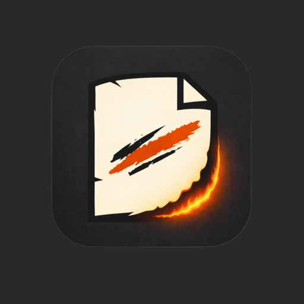

Questions about burning, the Kept shelf, timed burns, voice notes, App Lock, or Premium in Rant & Private Burn Journal (formerly Ember Journal). Start here, or email directly.

A private journal for the messy version. Write it or say it, keep what helps, burn what doesn't.
iPhone · DahVio StudiosNo. There's no sign-in, registration, or cloud profile. Everything you write or record stays on your iPhone.
Keep moves an entry to your Kept shelf so you can come back to it. Burn permanently deletes it after a short release ritual. Free keeps up to 10 thoughts at a time; burning one frees a slot.
No. Burning deletes the entry and its voice note from the app, with no trash folder and no undo. That's the point, so the app asks once before it burns.
On the Dump screen, tap Record a voice note. iOS will ask for microphone access the first time. Tap Stop recording when you're done, or Re-record to replace it.
Timed Burns are part of Premium. On the Kept shelf, tap Set Timer on a thought and choose 24 hours, 7 days, or 30 days. When the time is up, the thought burns itself.
On the Kept shelf, tap Lock on any thought to hide its text until you unlock it. To lock the entire app with Face ID, Touch ID, or your passcode, turn on App Lock in Settings (a Premium feature) and pick how long it waits before locking.
Writing prompts for when your head is full but the first sentence won't come out. There are over 90 free sparks; Premium adds the Exes & People pack and the rest of the library. Tap the star to save favorites.
App Lock with Face ID, Timed Burns, an unlimited Kept shelf, and the Exes & People spark pack. It's a single one-time purchase, shown in your local currency in the App Store. No subscription, no renewal.
Go to Settings, tap Unlock Premium, then tap Restore previous purchase. Make sure you're signed in with the same Apple ID you used to buy it.
There's no account or cloud sync, so DahVio can't transfer entries for you. Setting up a new iPhone from a backup or transfer of your old one may bring app data along, but that's handled by iOS and isn't guaranteed.
Yes. It's the same app with a new name. Your entries, settings, and any Premium purchase carry over with the update.
Go to Settings › Reset All Data. This permanently deletes all entries and settings and can't be undone. Deleting the app from your iPhone also removes its data.
Email ray@dahvio.com with what happened, what device you're using, and what you expected to see. That makes it much easier to fix quickly.
Need help, found a bug, or have an idea for the app? Email is the best way to reach DahVio Studios. Please don't include anything from your journal; it isn't needed to help you.
ray@dahvio.com